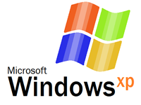

ЛИЦЕНЗИЯ НА ПРОГРАММНОЕ ОБЕСПЕЧЕНИЕ
Термин "КОМПЬЮТЕР" в этом документе эквивалентен термину "ОБОРУДОВАНИЕ"
(если ОБОРУДОВАНИЕ представляет собой одну компьютерную систему) или
обозначает компьютерную систему, с которой работает ОБОРУДОВАНИЕ (если
ОБОРУДОВАНИЕ является компонентом компьютерной системы).
-
1 ПРЕДОСТАВЛЕНИЕ ЛИЦЕНЗИИ. Изготовитель предоставляет вам следующие права при
условии выполнения вами всех условий настоящего Лицензионного соглашения с
конечным пользователем:
-

Установка и использование. Вы можете устанавливать, использовать,
отображать и запускать только одну копию и осуществлять доступ только к
одной копии ПРОГРАММНОГО ОБЕСПЕЧЕНИЯ на КОМПЬЮТЕРЕ. В каждый момент
времени ПРОГРАММНОЕ ОБЕСПЕЧЕНИЕ может использоваться не более чем на
двух (2) процессорах на КОМПЬЮТЕРЕ одновременно, если в Сертификате
подлинности не указано большее количество.
-
ПРОГРАММНОЕ ОБЕСПЕЧЕНИЕ как компонент КОМПЬЮТЕРА - передача прав.
Данная лицензия не подлежит совместному использованию несколькими
пользователями, передаче другим лицам или одновременному использованию
на нескольких компьютерах. ПРОГРАММНОЕ ОБЕСПЕЧЕНИЕ предоставляется в
пользование по лицензии вместе с КОМПЬЮТЕРОМ как единый интегрированный
продукт и может использоваться только с КОМПЬЮТЕРОМ. Вы не имеете права
использовать ПРОГРАММНОЕ ОБЕСПЕЧЕНИЕ, если оно не сопровождается
ОБОРУДОВАНИЕМ. Вы можете навсегда передать другому лицу все свои права
по данному Лицензионному соглашению с конечным пользователем только в
случае безвозвратной продажи или передачи КОМПЬЮТЕРА и при условии, что
у вас не останется никаких копий ПРОГРАММНОГО ОБЕСПЕЧЕНИЯ. Если
ПРОГРАММНОЕ ОБЕСПЕЧЕНИЕ является обновлением, передаче подлежат и все
предыдущие версии ПРОГРАММНОГО ОБЕСПЕЧЕНИЯ. Передача должна также
включать наклейку "Сертификат подлинности". Передача не может быть
опосредованной (например, через консигнацию). До передачи предполагаемый
новый пользователь Программного обеспечения должен подтвердить свое
согласие со всеми условиями данного Лицензионного соглашения с конечным
пользователем.
-
Обязательная активация. Действие прав, предоставляемых данным
Лицензионным соглашением с конечным пользователем, прекращается через
тридцать (30) дней с момента вашей первоначальной установки ПРОГРАММНОГО
ОБЕСПЕЧЕНИЯ, если вы не предоставили необходимую информацию для
активации своей лицензионной копии, как это предлагается сделать при
установке ПРОГРАММНОГО ОБЕСПЕЧЕНИЯ. Активацию ПРОГРАММНОГО ОБЕСПЕЧЕНИЯ
можно выполнить через Интернет или по телефону. Звонки могут быть
платными. Если вы модифицируете компьютерное оборудование или вносите
изменения в ПРОГРАММНОЕ ОБЕСПЕЧЕНИЕ, может потребоваться повторная
активация ПРОГРАММНОГО ОБЕСПЕЧЕНИЯ. Данное ПРОГРАММНОЕ ОБЕСПЕЧЕНИЕ
включает средства, препятствующие его использованию без лицензии.
Корпорация Майкрософт будет использовать эти средства для проверки
наличия у вас лицензионной копии ПРОГРАММНОГО ОБЕСПЕЧЕНИЯ. Если у вас
нет лицензии на ПРОГРАММНОЕ ОБЕСПЕЧЕНИЕ, вы не можете устанавливать это
ПРОГРАММНОЕ ОБЕСПЕЧЕНИЕ и его последующие обновления. Microsoft
Licensing, GP, Microsoft Ireland Operations Limited и/или Microsoft
(China) Co. Limited (вместе - "MS"), а также корпорация Майкрософт и ее
дочерние компании не будут собирать во время этого процесса никакой
информации с вашего КОМПЬЮТЕРА, по которой можно было бы установить вашу
личность.
-
Подключение устройств. Вы имеете право подключить к КОМПЬЮТЕРУ до
пяти (5) компьютеров или других электронных устройств (каждое из них -
"Устройство") для использования одной или нескольких из следующих служб
ПРОГРАММНОГО ОБЕСПЕЧЕНИЯ: файловых служб (File Services), служб печати
(Print Services), служб IIS (Internet Information Services), службы ICS
(Internet Connection Sharing) и телефонных служб. В эти пять разрешенных
соединений входят любые непрямые соединения, созданные с помощью
"мультиплексирования" либо другого программного обеспечения или
оборудования, обеспечивающих пулинг или объединение подключений. Это
ограничение (максимум 5 соединений) не распространяется на другие виды
использования ПРОГРАММНОГО ОБЕСПЕЧЕНИЯ, например на синхронизацию данных
между Устройством и КОМПЬЮТЕРОМ, при условии, что в каждый момент
времени только один пользователь осуществляет доступ к ПРОГРАММНОМУ
ОБЕСПЕЧЕНИЮ, использует, отображает или запускает его. Этот пункт 1.4 не
дает вам прав доступа к Сеансу КОМПЬЮТЕРА с какого-либо Устройства. Под
"Сеансом" понимается любое использование ПРОГРАММНОГО ОБЕСПЕЧЕНИЯ,
обеспечивающее функциональные возможности, аналогичные тем, которые
предоставляются конечному пользователю, взаимодействующему с КОМПЬЮТЕРОМ
с помощью любой комбинации периферийных устройств ввода, вывода и
отображения.
-
Программы Remote Assistance и NetMeeting. ПРОГРАММНОЕ ОБЕСПЕЧЕНИЕ
включает технологии Remote Assistance ("удаленный помощник") и
NetMeeting (аудио- и видеоконференции), которые позволяют осуществлять
прямой удаленный доступ к ПРОГРАММНОМУ ОБЕСПЕЧЕНИЮ или приложениям,
установленным на КОМПЬЮТЕРЕ (иногда называемом "главным устройством"), с
других Устройств. Если вы используете Remote Assistance или NetMeeting
(или любое другое программное обеспечение, предоставляющее аналогичные
функциональные возможности для аналогичных целей), то вы можете делить
Сеанс с другими пользователями без каких-либо ограничений на количество
подключенных Устройств и без приобретения дополнительных лицензий на
ПРОГРАММНОЕ ОБЕСПЕЧЕНИЕ. Чтобы выяснить, можно ли использовать
приложение корпорации Майкрософт или другого производителя совместно с
программой Remote Assistance или NetMeeting без дополнительной лицензии,
следует обратиться к лицензионному соглашению, сопровождающему
программное обеспечение, или к соответствующему лицензиару. Данное
Лицензионное соглашение с конечным пользователем не дает разрешения на
использование технологий Microsoft Remote Desktop (или другого
программного обеспечения, предоставляющего аналогичные функциональные
возможности для аналогичных целей) для создания на КОМПЬЮТЕРЕ Сеанса
связи с каким-либо Устройством. Эти технологии предоставляются по
лицензии с ОС Windows XP Professional Edition. За исключением случаев,
когда это явно разрешено вышеуказанными программами NetMeeting и Remote
Assistance, лицензия на ПРОГРАММНОЕ ОБЕСПЕЧЕНИЕ не может использоваться
несколькими пользователями или одновременно на нескольких компьютерах
(рабочих станциях, терминалах или других устройствах).
-
Резервное копирование. ВЫ МОЖЕТЕ СОЗДАТЬ ТОЛЬКО ОДНУ РЕЗЕРВНУЮ
КОПИЮ ПРОГРАММНОГО ОБЕСПЕЧЕНИЯ. Вы можете использовать одну (1)
резервную копию только для архивирования и переустановки ПРОГРАММНОГО
ОБЕСПЕЧЕНИЯ на КОМПЬЮТЕРЕ. ВЫ НЕ ИМЕЕТЕ ПРАВА СОЗДАВАТЬ КАКИЕ-ЛИБО
другие копии Программного обеспечения и сопровождающих его печатных
материалов, кроме случаев, явно указанных в этом Лицензионном соглашении
с конечным пользователем или предусмотренных местным законодательством.
Запрещается предоставлять компакт-диск или резервную копию в ПРОКАТ, В
аренду, ВО ВРЕМЕННОЕ ПОЛЬЗОВАНИЕ иЛИ передавать эти материалы другим
лицам каким-либо иным способом.